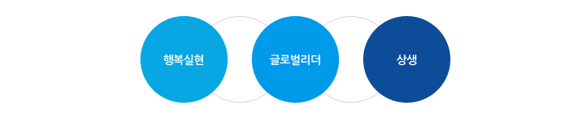

CEO 인사말
좋은 에너지를 통해 더 좋은 세상을 만들겠다는
KOGAS의 소중한 기업이념입니다.
앞으로도 이 약속을 잊지 않고 지켜나가며
고객에게 사랑받는 기업이 되겠습니다.
감사합니다.
1983년 8월, ‘천연가스의 안전. 안정적 공급을 통한 국민생활 편익 증진 및 복리향상’을 목적으로 설립된 KOGAS가 올해 창립 30주년을 맞았습니다. KOGAS가 세계적 에너지기업으로 오늘의 위상을 정립할 수 있었던 가장 큰 힘은 지난 30년간 변함없이 관심과 격려를 보내주신 국민과 고객 여러분입니다. KOGAS는 도전과 혁신을 거듭하며 지속적인 성장을 하고 있습니다. 그리고 그 성장의 중심에는 공사 임직원의 핵심가치로써 신뢰, 책임이라는 기반가치와 변화, 도전이라는 지향가치가 있습니다. 세계 제1위의 LNG 저장능력을 바탕으로 우리나라 천연가스 보급률을 확대시키며 에너지복지를 실현하고 있고, 전 세계를 무대로 탐사 및 개발, 생산 사업을 주도적으로 추진하고 있습니다.
에너지를 통한 국민행복 실현 KOGAS
KOGAS는 천연가스의 안정적 공급을 통해 에너지 복지를 실현함으로써 국민 행복을 추구하고 있습니다. 전국을 잇는 환상 배관망을 구축, -천연가스를 안전하게 보급해 경제 성장과 균형 발전, 편익 증진을 이뤄내고 안정적 공급을 위한 장기적인 대비 또한 철저히 하고 있습니다. 현재 KOGAS는 전 세계를 무대로 유.가스전 사업을 추진하고 있으며 이러한 노력의 결실로 2.4억 톤이 넘는 자원을 확보했습니다.
세계를 누비는 에너지 리더, KOGAS
KOGAS는 대한민국의 에너지 자립을 실현하고 자원의 경제적이고 안정적인 확보를 위해 해외사업 분야에 역량을 집중하여 전 세계에서 탐사개발과 생산광구 참여는 물론 액화사업, 터미널 운영사업 등 다양한 프로젝트를 활발하게 진행중입니다. 자원탐사 및 개발 등 상류부문은 물론 해외 LNG터미널, 배관망 사업과 같은 중.하류부문까지 폭넓은 참여를 통해 자원 수급과 미래성장 동력을 확보하고 있습니다. 밸류체인 통합으로 이루는 글로벌 에너지 리더, KOGAS의 모습입니다.
국가와 국민의 미래를 준비하는 KOGAS
KOGAS는 국민과 국가와 세계와 상생하는 기업입니다. 지금의 KOGAS로 성장하기까지는 정부의 정책적인 지원과 국민의 도움이 컸습니다. 그렇기에 KOGAS는 국민기업으로서 책임과 의무를 다하기 위해 다방면에서 노력하고 있습니다. 에너지 소외계층에 대한 배려, 대.중소기업 동반성장, 국내기업의 해외진출 지원, 장애인과 노인 등 사회적 약자에 대한 제도적 지원 등 사회통합과 국가발전을 위해 적극적으로 나서고 있습니다.
- CEOJang Seok Hyo1957.10.27
-
최종학력
- 1975.02중동고등학교
- 1984.02인하대 무역학과
- 1989.08University of Minnesota, 경영학 석사
-
주요경력
- 1983.12한국가스공사 입사
- 2003.11 ~ 2006.02한국가스공사 도입처장
- 2006.02 ~ 2007.07한국가스공사 도입보좌역
- 2007.07 ~ 2007.09한국가스공사 마케팅본부장 직무대행
- 2007.09 ~ 2008.12한국가스공사 마케팅본부장
- 2008.12 ~ 2010.01한국가스공사 자원본부장
- 2010.02 ~ 2011.01한국가스공사 자원사업본부장
- 2011.07 ~ 2013.07통영예선(주) 사장
- 2013.07 ~ 현재한국가스공사 사장
-
수상경력
- 2005.11국무총리상(에너지자원 개발 유공)